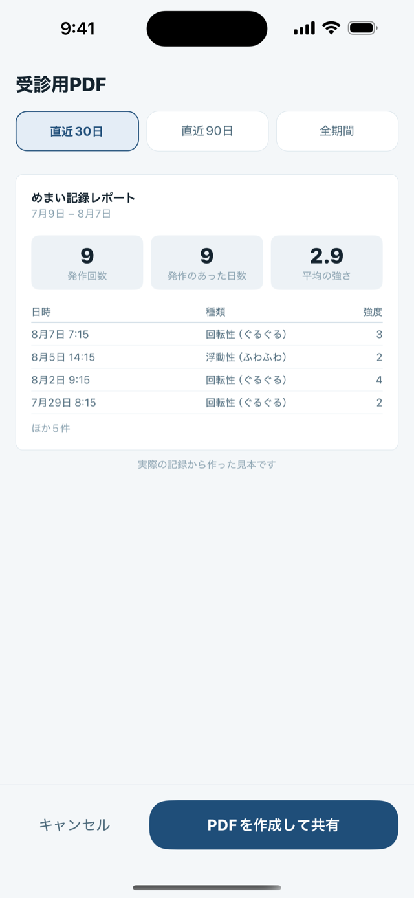

発作が起きているあいだに、書き留めておく。
めまい日記は、回転性（ぐるぐる）・浮動性（ふわふわ・ふらつき）・立ちくらみの発作を、その場で書き留めるための日記です。メニエール病、BPPV（良性発作性頭位めまい症）、前庭性の片頭痛、まだ名前のついていない眩暈。発作の最中は3つの質問だけ。受診のときは、1つのPDFにまとめて渡せます。
どんなめまいか。どのくらい続いたか。つらさはどれくらいか。あとは「保存」だけです。ほかの項目はすべて任意です。
何回・どのくらいの長さ・どれくらいのつらさ・思い当たること・飲んだ薬。1分で目を通す人のために並べてあります。
発作の最中に
画面を長く見ていられないときに、使えること
記録の画面が尋ねるのは3つだけです。どれも大きなボタンを1回押すだけで、文字を打つ場面も、長く選び続ける場面もありません。
- どんなめまい？ 回転性（ぐるぐる）／浮動性（ふわふわ）／立ちくらみ（クラッ）／その他。
- どのくらい続いた？ 数秒〜1分／数分〜20分／20分〜半日／半日以上。
- つらさは？ 5段階を、強くなるほど傾く線で選びます。数字よりも、当事者が実際に口にする「世界が傾いた」という感覚に近いからです。
余裕があるときは、タイマーも使えます。始まったときに「いま発作が起きている」、おさまったときに「おさまった — 記録する」。持続時間はあとから思い出すのではなく実測になり、その質問は記録の画面が開いた時点ですでに埋まっています。タイマーはアプリを閉じても続くので、そのまま横になれます。
あとから足せる、任意の部分
「詳細（任意）」を開くと、思い当たること（頭を動かした・寝返り／急に立ち上がった／寝不足／ストレス／塩分が多かった／カフェイン／飲酒／天気・気圧／生理周期）と、一緒に出た症状（耳鳴り／聞こえにくい／耳がつまる感じ／吐き気／嘔吐／頭痛／光がまぶしい／動悸・冷や汗）を選べます。飲んだ薬と自由記入のメモも同じ場所です。どれも、保存には必要ありません。
気圧は、こちらが何もしなくても添えられます。保存した時点でiPhone内蔵の気圧センサーを読むので、記録に残る数字は予報ではなく実測です。センサーが読めなかったときは空欄のまま残り、あとから予報の値で埋めることはしません。

受診のときに
日記をつけ始める理由は、たいてい「うまく説明できなかった」から
めまいの診療で必要とされることは、意外と限られています。どんな発作が、どのくらいの長さで、どのくらいの頻度で起きたか。レポートが刷るのは、まさにその3つです。
受診用PDFを開いて、直近30日・直近90日・全期間から選び、共有します。印刷しても、ご自身宛にメールしても、診察室でそのまま画面をお見せしても構いません。
紙面に載るもの
- サマリー: 発作回数と、発作のあった日数。生活ログもつけていれば、平均睡眠と平均ストレスも。
- 内訳: 種類別・持続時間別・強度の分布と、選んだ思い当たること・随伴症状の集計。
- 発作一覧そのもの: 日時／種類／持続時間／強度／気圧／その回のトリガー・随伴症状・服薬／メモ。
中身は文章と表が1つだけで、グラフも飾りもありません。紙面の末尾には注記も入ります。これは患者本人が記録した内容の一覧であり、診断や医学的評価は含まないこと、持続時間の区分は記録時の本人申告であること。
生の数値が要るとき
発作の記録はCSVでも書き出せます。1件1行で、日付・開始時刻・種類・持続時間の区分・実測秒数・強度・気圧（hPa）・トリガー・随伴症状・服薬・メモ。BOM付きのUTF-8で書き出すので、Excelで開いても日本語のメモが化けません。

気圧と天気
気圧の数字が意味すること、そして意図して言わないこと
めまい日記は、性質の違う2つの気圧を扱います。混ざると読み違えるので、分けて書きます。
- 発作のときの気圧 記録した瞬間にiPhoneの気圧センサーが測った値で、その1件に紐づいて保存されます。
- これから48時間の気圧の予報 お住まいの地域について、Appleの天気サービス（WeatherKit）から取得します。Proでは、自分の発作のときの気圧を同じグラフに重ねられます。
どちらも「空気の事実」として、お使いの地域の単位で表示します（日本ならhPa、米国ならinHg）。逆に、このアプリが決して言わないことが2つあります。気圧が発作を起こした、という因果。そして、これから発作が起きる、という予測です。
「ここに出るのは記録の集計（相関）で、原因の特定や発作の予測ではありません。」— アプリの分析画面、トリガーの傾向の下に常設
「これは気圧の予報です。体調がどうなるかを示すものではありません。気になる症状は医師にご相談ください。」— アプリの気圧画面に常設
「天気痛」「気象病」という言葉で語られることについても、同じ線を引いています。天気がご自身の症状を動かすのかどうかは、医師と話すべきことです。このアプリの役目は、発作と気圧を同じ時間軸に並べて、その相談を印象ではなく実際の日付付きでできるようにすることだけです。
位置情報を許可しなくても使えます
気圧の画面で地域を一覧から手で選べますし、気圧の機能そのものを使わなくても構いません。発作の記録はそれに依存しません（許可しなかった場合は、地域の一覧が代わりに開きます）。現在地を使う場合も、iOSで最も粗い精度で受け取ったうえ、使う前に約28km四方の格子に丸めています。

無料とPro
記録は全部無料。お支払いは「記録を外に出す」ところだけ
発作の最中に使えない記録アプリは、記録アプリではありません。だから記録には鍵をかけていません。試用期限も、広告も、サブスクリプションも、このアプリにはありません。
つらいときにする操作は、すべて
- 発作の記録（件数の制限なし）とタイマー
- 思い当たること・随伴症状・服薬・メモ
- あとから、過去の日付で書き足すこと
- 履歴・カレンダー・その日の詳細
- 生活ログ（睡眠・ストレス・塩分・水分・カフェイン・飲酒）
- 月別・種類別・持続時間別・強度別の分析
- これから48時間の気圧の予報
- 服薬リマインダー1本
- ライト／ダークの外観、日本語／英語の切り替え
アプリの外へ出ていくもの
- 受診用のPDFレポート
- 分析の「トリガーの傾向」
- 自分の発作のときの気圧を、予報のグラフに重ねる表示
- 記録全件のCSV書き出し
- 服薬リマインダーの本数無制限
一度きりのお支払いで、サブスクリプションではありません。購入はApple Accountに紐づき、ファミリー共有にも対応しています。価格は、設定画面の購入ボタンにその時点の金額が表示されます。
データの置き場所
アカウントがないのは、サインインする先が存在しないからです
発作・持続時間・つらさ・思い当たること・随伴症状・服薬・メモは、端末内のアプリの中のデータベースに保存されます。当方のサーバーはなく、解析も広告も、データを集める第三者SDKも入っていません。アプリを削除すればデータも消えますし、それより早く消したいときは設定に「すべてのデータを削除」があります。
端末の外に出るのは、前述の丸めた地域だけです。気圧の予報を調べるためにAppleへ渡るもので、記録の内容が一緒に送られることはありません。Appleの「ヘルスケア」との読み書きも行いません。
よくあるご質問
お問い合わせの前に
購入したのに、まだ鍵がかかっています
購入したときと同じApple Accountでサインインした状態で、設定 → DizzyLog Pro → 購入を復元をお試しください。購入は端末ではなくApple Accountに紐づくため、機種変更後も引き継がれます。見つからない場合は、ほとんどが別のApple Accountでのサインインです。
通信できない場所や、位置情報を切った状態でも使えますか
記録についてはどちらも使えます。発作の記録・タイマー・履歴・PDFの作成は端末の中で完結し、記録に添える気圧も端末のセンサーの値です。通信と地域が要るのは、これから48時間の予報だけです。
複数の端末で同期できますか
できません。アカウントもサーバーも持たないため、同期する経路そのものがありません。記録はご自身のiPhoneまたはiCloudのバックアップに含まれ、そのバックアップから復元すれば戻ってきます。
対応している端末を教えてください
iPhoneのみです（iPadには対応していません）。気圧の予報にはiOS 16以降が必要ですが、それ以外の機能は関係なく使えます。
記録の途中で不具合が起きました
だいたいの日時と、どこを操作したかをお知らせください。アプリに書かれた内容は開発者からは一切見えないため、お送りいただいた情報だけが手がかりになります。
サポート
開発者に直接お書きください
ご質問・不具合のご報告・ご要望・返金に関するお問い合わせも、すべて同じ宛先で承ります。
個人で開発しています。すべて目を通しており、返信には1〜2日いただくことが多いです。日本語でも英語でも構いません。
めまい日記は記録のためのアプリで、医療機器ではありません
お書きになったことを記録するだけです。診断も、発作の予測も、治療の助言も行いません。
- 初めての、あるいは急な・強いめまいは、アプリではなく医師にご相談ください。
- めまいに加えて、胸の痛み、片側の脱力、ろれつが回らない、ものが二重に見える、突然の難聴がある場合は緊急です。ただちに受診してください。
- ここで見たグラフを理由に、薬を変えたり中止したりしないでください。